World seed 1200. Five villages selected by a fixed random sample, with both requested altitudes for each. Click an image for the full 1280 × 800 render. These are sequential Blender 5.2 geometry reviews, not Unity/HDRP captures or GPU measurements.
Buildings, accepted placements, scale, garden meshes, field margins and soil/growth colours come from production code. Lighting, model material approximation, 10 m terrain sampling, 2 m ground colour sampling and field hedge silhouettes are review-only. The crop shader, full splat maps, shadows and LOD transitions still need Unity review.
Implementation, patches and build checklist · Five-village contact sheet
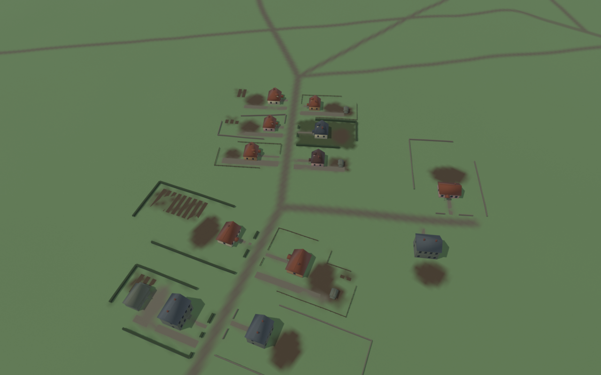
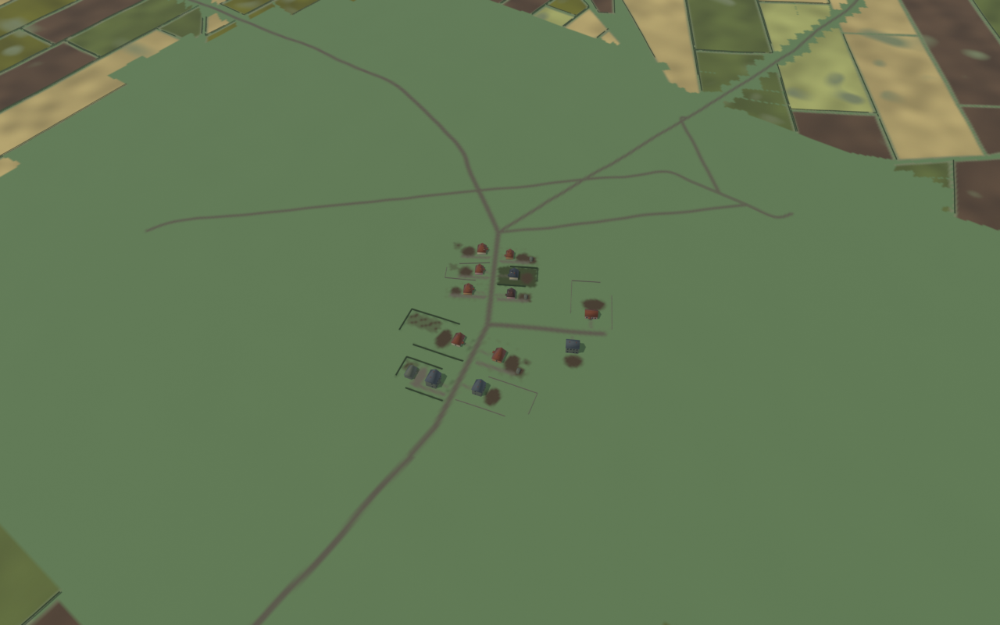
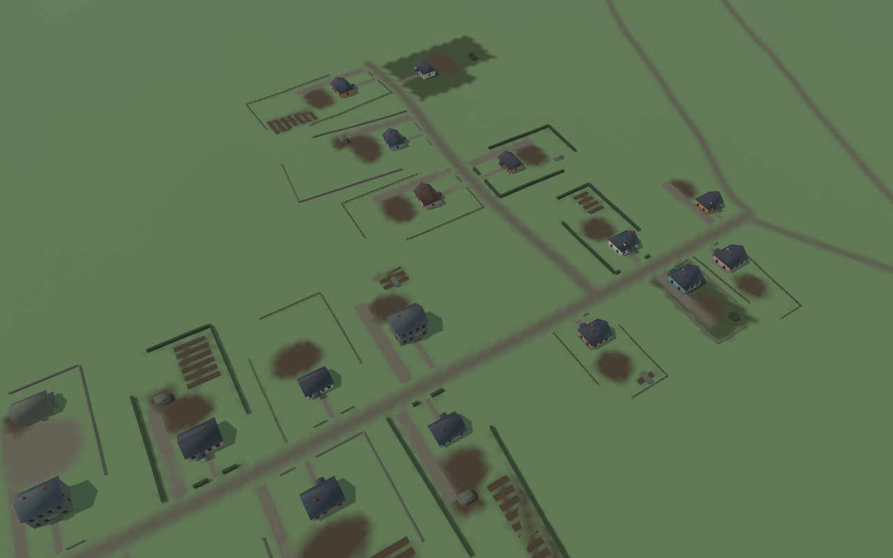
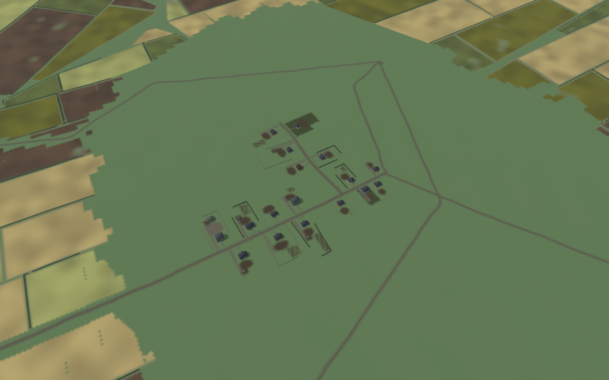
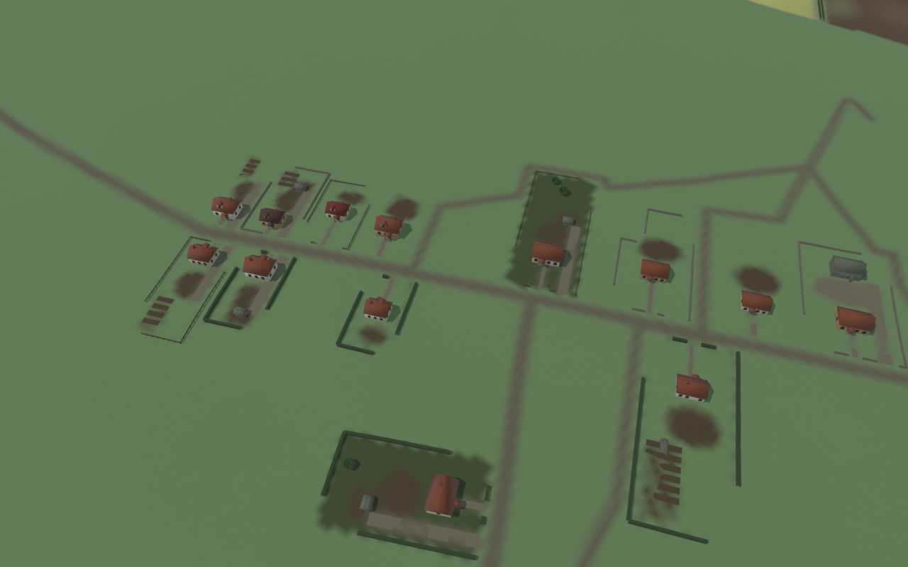
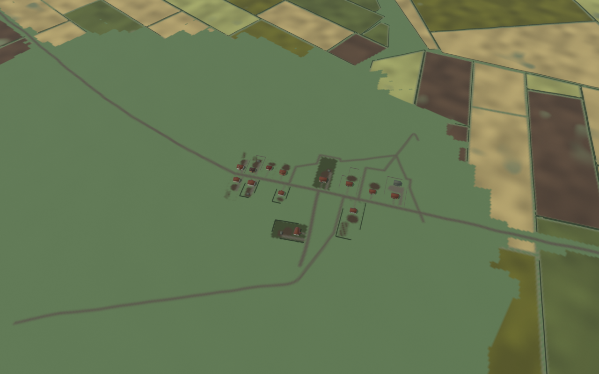
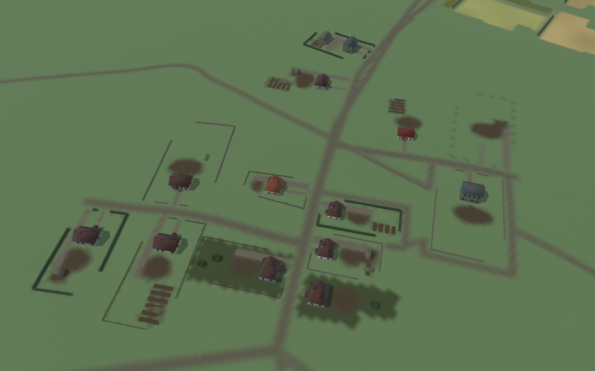
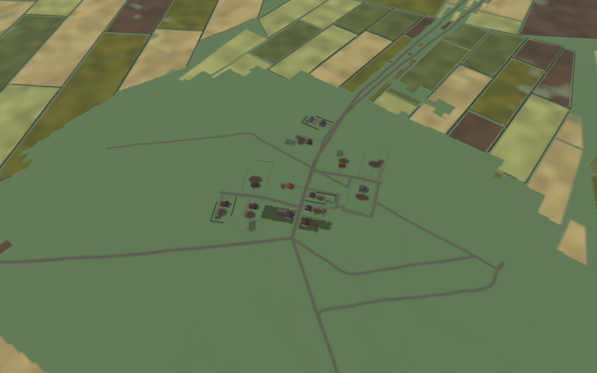
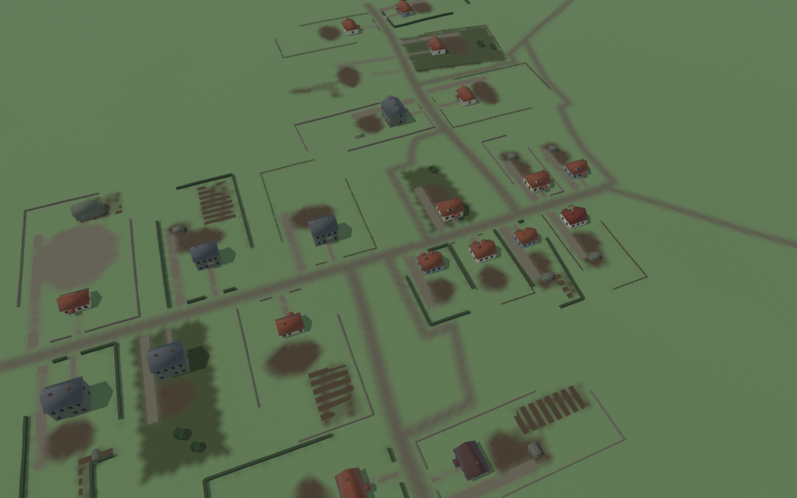
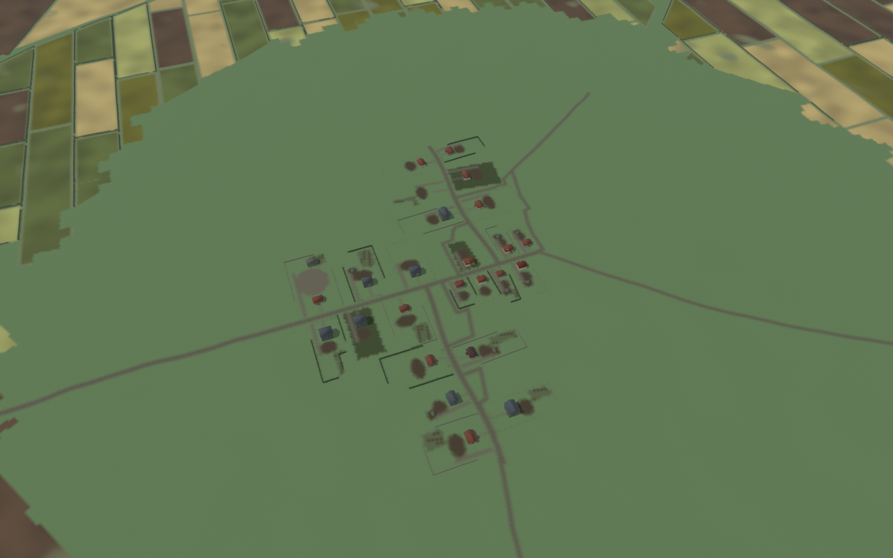
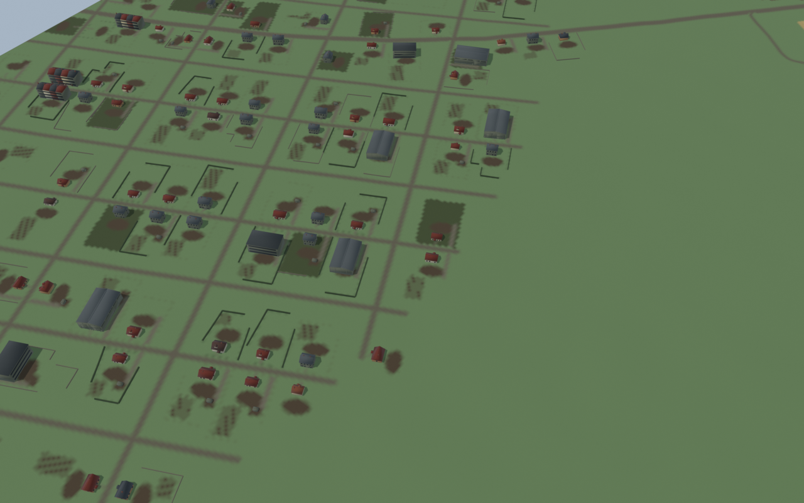
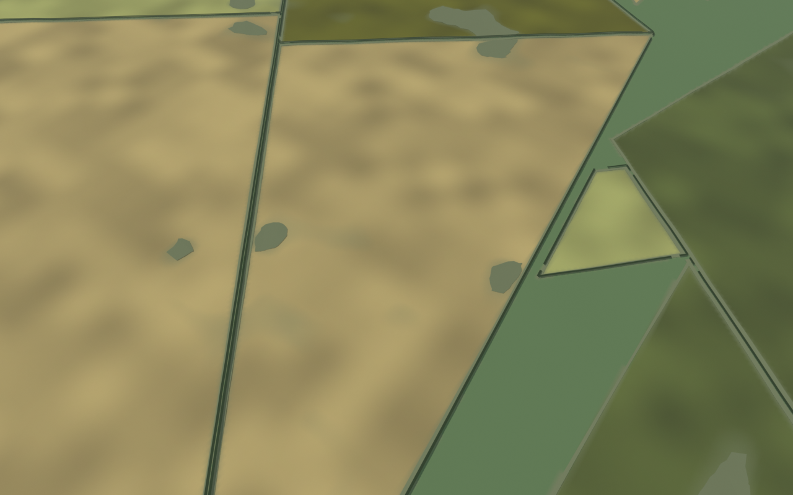